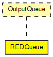

RED (Random Early Detection) queue, to be used in routers' network interfaces. Conforms to the OutputQueue interface.
Implements the original RED algorithm from "Random Early Detection Gateways for Congestion Avoidance" by Sally Floyd and Van Jacobson, 1993.
The code is based on the algorithm described on p10 of the paper:
Initialization:
avg <- 0
count <- -1
for each packet arrival
calculate the new average queue size avg:
if the queue is nonempty
avg <- (1-wq)*avg + wq*q
else
m <- f(time-q_time)
avg <- (1-wq)^m * avg
if minth <= avg < maxth
increment count
calculate probability pa:
pb <- maxp*(avg-minth) / (maxth-minth)
pa <- pb / (1-count*pb)
with probability pa:
mark the arriving packet
count <- 0
else if maxth <= avg
mark the arriving packet
count <- 0
else count <- -1
when queue becomes empty
q_time <- time
Saved Variables:
- avg: average queue size
- q_time: start of the queue idle time
- count: packets since last marked packet
Fixed parameters:
- wq: queue weight
- minth: minimum threshold for queue
- maxth: maximum threshold for queue
- maxp: maximum value for pb
Other:
- pa: current packet-marking probability
- q: current queue size
- time: current time
- f(t): a linear function of the time t
The function f() is supposed to estimate the number of packets that could have arrived during the idle interval. We use f(t) = pkrate * t, where pkrate = 1/s, s being the typical transmission time for a small packet as mentioned in Section 11 of the paper.
Example parameter values: wq = 0.002, minth = 5 packets, maxth = 15 packets, maxp = 1/50 = 0.02 and pkrate = 12000 (~1K packets on 100Mbps link).
The following diagram shows usage relationships between types. Unresolved types are missing from the diagram.
The following diagram shows inheritance relationships for this type. Unresolved types are missing from the diagram.
| Name | Type | Default value | Description |
|---|---|---|---|
| wq | double | 0.002 |
queue weight |
| minth | double | 5 |
minimum threshold for avg queue length |
| maxth | double | 50 |
maximum threshold for avg queue length (=buffer capacity) |
| maxp | double | 0.02 |
maximum value for pb |
| pkrate | double | 150 |
arrivals per sec (see comment above) |
| Name | Value | Description |
|---|---|---|
| display | i=block/queue |
| Name | Direction | Size | Description |
|---|---|---|---|
| in | input | ||
| out | output |
// // RED (Random Early Detection) queue, to be used in routers' network // interfaces. Conforms to the OutputQueue interface. // // Implements the original RED algorithm from // "Random Early Detection Gateways for Congestion Avoidance" by // Sally Floyd and Van Jacobson, 1993. // // The code is based on the algorithm described on p10 of the paper: // // <pre> // Initialization: // avg <- 0 // count <- -1 // for each packet arrival // calculate the new average queue size avg: // if the queue is nonempty // avg <- (1-wq)*avg + wq*q // else // m <- f(time-q_time) // avg <- (1-wq)^m * avg // if minth <= avg < maxth // increment count // calculate probability pa: // pb <- maxp*(avg-minth) / (maxth-minth) // pa <- pb / (1-count*pb) // with probability pa: // mark the arriving packet // count <- 0 // else if maxth <= avg // mark the arriving packet // count <- 0 // else count <- -1 // when queue becomes empty // q_time <- time // // Saved Variables: // - avg: average queue size // - q_time: start of the queue idle time // - count: packets since last marked packet // // Fixed parameters: // - wq: queue weight // - minth: minimum threshold for queue // - maxth: maximum threshold for queue // - maxp: maximum value for pb // // Other: // - pa: current packet-marking probability // - q: current queue size // - time: current time // - f(t): a linear function of the time t // </pre> // // The function f() is supposed to estimate the number of packets // that could have arrived during the idle interval. // We use <i>f(t) = pkrate * t</i>, where <i>pkrate = 1/s</i>, // s being the typical transmission time for a small packet // as mentioned in Section 11 of the paper. // // Example parameter values: wq = 0.002, minth = 5 packets, maxth = 15 packets, // maxp = 1/50 = 0.02 and pkrate = 12000 (~1K packets on 100Mbps link). // simple REDQueue like OutputQueue { parameters: double wq = default(0.002); // queue weight double minth = default(5); // minimum threshold for avg queue length double maxth = default(50); // maximum threshold for avg queue length (=buffer capacity) double maxp = default(0.02); // maximum value for pb double pkrate = default(150); // arrivals per sec (see comment above) @display("i=block/queue"); gates: input in; output out; }